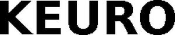

Trade Mark Journal No.2026/008 20 February 2026
WO0000001899721 (10,35)
Office of origin: European Union Intellectual Property Office (EUIPO)
Date of International Registration:16 October 2025
Date of designation in the UK:
16 October 2025

- Class 10
- Surgical apparatus and instruments; medical apparatus and instruments; testing apparatus for medical purposes; dental apparatus and instruments; orthodontic appliances; orthodontic retainers; X-ray apparatus for medical purposes; radiological apparatus for medical purposes; orthopaedic articles; tomographs for medical purposes; medical and veterinary apparatus and instruments; heart rate monitoring apparatus; bioresonance pulse device; heart pacemakers; defibrillators; brain pacemakers; pulse meters; electrocardiograph instruments; spirometers [medical apparatus]; dialyzers; drainage tubes for medical purposes; cannulae; inhalers; trocars; injectors for medical purposes; diabetic monitoring apparatus; fleams; blood testing apparatus; cholesterol meters; body fat monitors; body composition monitors; furniture especially made for medical purposes; acupuncture needles; balloon catheters; catheters; catheters for medical use; intracardiac catheters; intravenous catheters; catheters for urological purposes; cardiovascular catheters; intravenous catheter sets; catheters incorporating filters; protective guards for catheters; tubing for use with catheters; medical and surgical catheters; catheters for surgical use; catheters for use in embolectomy; catheter apparatus for gastroenterological use; hydrophilic guide wire to track catheters; medical apparatus for urethral catheterisation; angiographic vascular introducers for the placement of catheters; catheter skin anchor instruments; medical devices for placing and securing catheters; medical guidewires; cardiovascular guidewires; guide wires for use with balloon dilatation catheters; medical guidewires and parts and fittings therefor; stents; medical stents; biocompatible coated stents; drug-coated stents for thrombosis; ureteral stents being surgical support; introducers for implanting anti-embolic filters; introducers for implanting vena-cava filters; medical apparatus for introducing pharmaceutical preparations into the human body; expandable braids for insertion in blood vessels for treating stenosis; expandable braids for insertion in bile ducts for treating stenosis; expandable braids for insertion in oesophagus for the treatment of stenosis; expandable braids for insertion in tubular organs of the body for the treatment of stenosis; cardiac probes; cardiac catheters; heart monitors; heart signal monitors; artificial hearts; cardiovascular instruments; electrodes for medical use; leads for pacemakers; heart rate recorders; artificial cardiac valves; implantable pacemakers; implantable cardiac pulse generators; cardio-pulmonary diagnostic instrumentation; cardiopulmonary perfusion apparatus; cardiac arrhythmia control devices; instruments for cardiac stimulation; cardiac defibrillation electrodes; artificial heart-lung machines; artificial heart-lung oxygenators; cardiovascular angioscopes; cardiovascular monitors; cardiovascular needles; cardiovascular pumps.
- Class 35
- Medical billing; medical cost management; retail services in relation to medical apparatus; retail services in relation to medical instruments; wholesale services in relation to medical apparatus; wholesale services in relation to medical instruments; computerised management of medical records and files; maintaining a registry of certified medical technical professionals; maintaining personal medical history records and files; advertising services to promote public awareness of medical issues; compilation of statistical data relating to medical research; provision of business statistical information relating to medical matters; automated processing of medical data; employment agency services relating to placement of medical and nursing personnel; retail services for pharmaceutical, veterinary and sanitary preparations and medical supplies; wholesale services for pharmaceutical, veterinary and sanitary preparations and medical supplies; advertising; marketing; data processing services [office functions]; business administration; business management; administrative support and data processing services; outsourcing services in the field of business operations; business administration of patient reimbursement programmes; industrial management consultation including cost/yield analyses.
Shanghai Lee Kai Technology Co. Ltd
Representative: Marcus Dury, DURY LEGAL Rechtsanwälte Beethoven, Str. 24, 66111 Saarbrücken, GERMANY